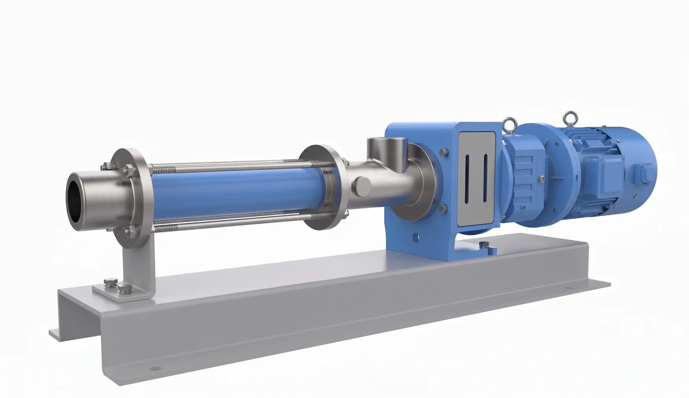

Calidad Alimenticia Certificada
Equipos fabricados íntegramente en Acero Inoxidable AISI 316L con pulido sanitario espejo. Garantizan un bombeo suave (Low Shear) que protege la estructura molecular del producto y asegura una limpieza profunda mediante sistemas CIP/SIP.

Sanitaria de Precisión (FFS)
Dosificación sanitaria en diseño monoblock compacto.
Diseñada para la inyección exacta de aditivos, saborizantes y enzimas. Su configuración monoblock elimina la necesidad de bases extensas, permitiendo una integración perfecta en skids de proceso donde el espacio es crítico, manteniendo una desviación de medición menor al 1%.

Sanitaria Estándar (FFA)
Diseño Quick Clean de desarme rápido manual.
El estándar de oro para el transporte de lácteos, jugos y bebidas. Construida en AISI 316 con juntas sanitarias, su diseño permite un acceso inmediato a las partes internas sin herramientas especiales, facilitando las rutinas de limpieza e inspección diarias exigidas por la FDA.

Sanitaria con Tolva y Sinfín (FFAJ)
Alimentación forzada para fluidos que no fluyen.
Solución especializada para medios de altísima viscosidad como mosto de uva, pulpas de fruta, dulces y pastas. Su tolva abierta con tornillo sinfín (hélice) fuerza el ingreso del producto hacia el estator, evitando la cavitación y asegurando un flujo constante sin dañar los sólidos.
¿Su proceso requiere una configuración a medida?
Diseñamos carros móviles, tableros con variador y tolvas personalizadas para optimizar su línea de producción alimenticia.
Consultar con Ingeniería